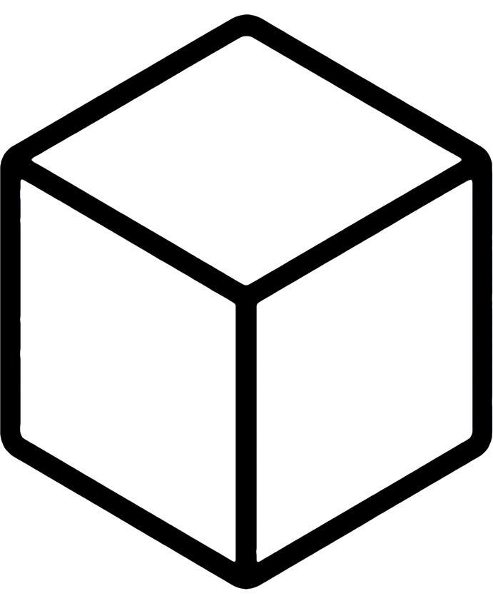
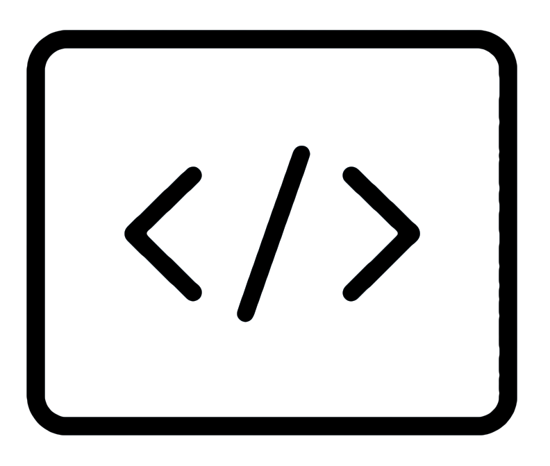

Bob+ Skills and Modes – Automation¶
IBM Bob ships with purpose-built Skills and Custom Modes for every Automation building block, giving engineers an AI-assisted workflow to plan, build, configure, and operate infrastructure, security, and optimization capabilities directly from their IDE.
How to install the Skills¶
The Skills have been packed into a single .zip that you can easily download and install. Go to the skills.zip page and click the Download raw file icon at the upper-right of the page. Copy all skill folders at either the global, ~/.bob/skills, or project-level, <project>/.bob/skills
Skill Taxonomy¶
Each Skill for IBM Building Blocks often aligns with an IBM product but not always. For specifics on how each skill works, read through the associated SKILL.md.
|
Automation Skills
| |
|---|---|
 Operate |
Using the IBM Cloud CLI; ibmcloud
Infrastructure-as-code: Ansible
Infrastructure-as-code: Terraform
Maximo Code Optimization
Maximo Java Conversion
|
Secure |
Non-human Identity: Vault
Application Risk & Continuous Compliance
Cryptographic & Quantum-Safe Readiness
|
 Optimize |
Automated Resource Management (ARM): Turbonomic
Full-Stack Application Observability
|
Automation Modes¶
Instructions and related files for these custom modes can be found in their respective repository.
|
Automation Modes
| |
|---|---|
Operate |
Ansible Ops
|
Secure |
Secrets Management
Application Risk & Continuous Compliance
Cryptographic & Quantum-Safe Readiness
|
Optimize |
Automated Resilience & Compliance
Automated Resource Management
Technology Financial Management & FinOps
Full-Stack Application Observability
|
For the complete list of all Building Block skills across AI, Data, and Automation, see the Bob+ Skills page.